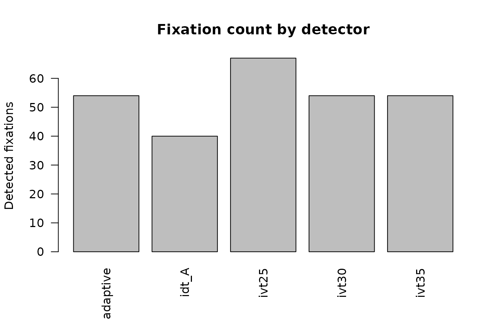
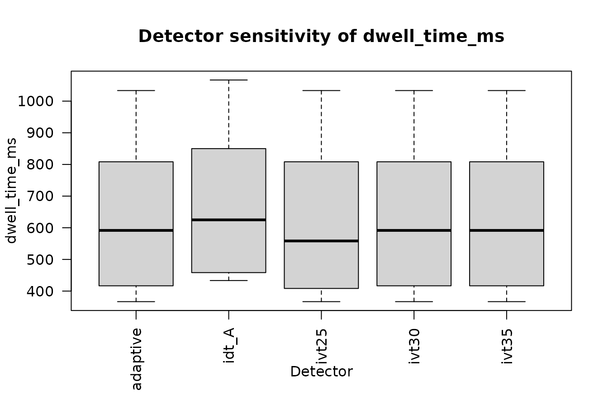
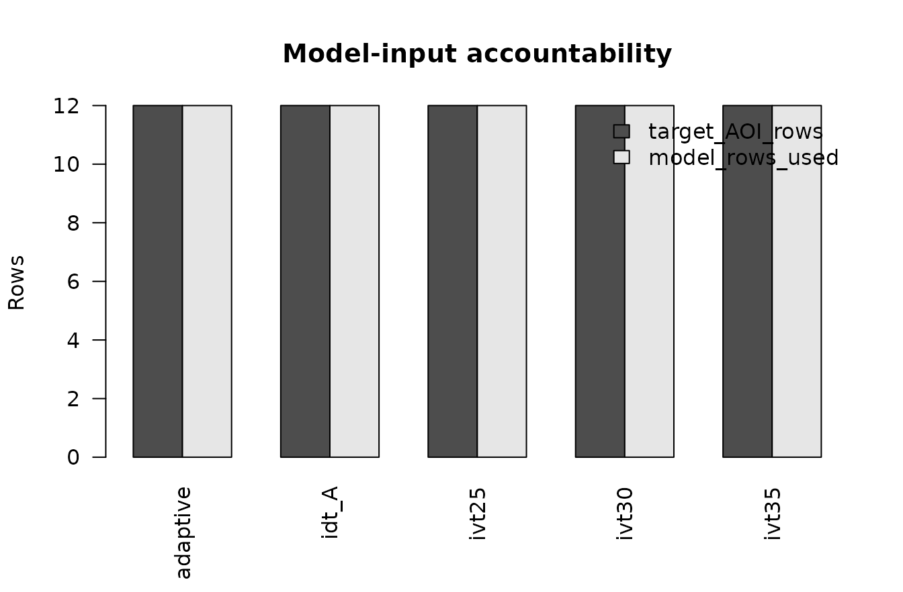

Visual reporting: detector multiverse diagnostics
Source:vignettes/event-detector-multiverse-visual-reporting.Rmd
event-detector-multiverse-visual-reporting.RmdPurpose
This article is a compact, runnable visual companion to
vignette("event-detector-multiverse"). It uses only
built-in detector implementations so the figures do not depend on
optional external backends.
The figures answer different questions and should be interpreted together:
- How many events did each detector produce?
- How strongly do successful event catalogues overlap in time?
- How much does detector choice move the AOI feature used in the analysis?
- How stable is the focal model coefficient under the identical model?
- How many rows actually reached each fitted model?
None of these plots establishes detector ground-truth accuracy.
Reproducible synthetic setup
dat <- simulate_detector_multiverse_data(
n_participants = 6,
sampling_rate = 60,
seed = 20260919
)
specs <- list(
define_event_detector_spec(
"ivt25", "ivt",
velocity_threshold = 25,
minimum_duration_ms = 60,
maximum_gap_ms = 75,
sampling_rate = 60,
coordinate_unit = "degrees"
),
define_event_detector_spec(
"ivt30", "ivt",
velocity_threshold = 30,
minimum_duration_ms = 60,
maximum_gap_ms = 75,
sampling_rate = 60,
coordinate_unit = "degrees"
),
define_event_detector_spec(
"ivt35", "ivt",
velocity_threshold = 35,
minimum_duration_ms = 60,
maximum_gap_ms = 75,
sampling_rate = 60,
coordinate_unit = "degrees"
),
define_event_detector_spec(
"idt_A", "idt",
dispersion_threshold = 1.2,
minimum_duration_ms = 80,
sampling_rate = 60,
coordinate_unit = "degrees"
),
define_event_detector_spec(
"adaptive", "adaptive_velocity",
minimum_duration_ms = 60,
maximum_gap_ms = 75,
sampling_rate = 60,
coordinate_unit = "degrees",
parameters = list(
noise_factor = 4,
minimum_velocity_threshold = 20
)
)
)
detected <- run_detector_multiverse(
dat,
create_detector_multiverse(specs, label = "visual_reporting"),
continue_on_error = TRUE
)The synthetic seed is fixed for documentation reproducibility. The chosen thresholds are examples, not universal recommendations.
1. Event-count sensitivity
event_summary <- summarise_detector_events(detected)
graphics::barplot(
event_summary$number_of_fixations,
names.arg = event_summary$detector_id,
las = 2,
ylab = "Detected fixations",
main = "Fixation count by detector"
)
Detected fixation counts across the declared internal detector specifications.
Large count differences suggest fragmentation or merging differences that may propagate into dwell, fixation count, revisits, transitions, or fixation-locked signals. Similar counts do not imply similar temporal boundaries.
2. Pairwise temporal agreement
plot_detector_agreement(detected)Pairwise temporal overlap among successful fixation catalogues.
Agreement is descriptive unless an independently justified reference catalogue is available. Use it to identify detector pairs that produce materially different event representations, not to select a winner.
3. AOI-feature sensitivity
features <- propagate_detector_to_aoi(
detected,
overlap = "error"
)
features <- propagate_detector_to_features(features)
plot_detector_feature_distributions(
features,
feature = "dwell_time_ms",
aoi_id = "disclosure"
)
Disclosure-AOI dwell across detector specifications.
Interpret the between-detector spread relative to the scale of the scientific effect. A stable direction with materially different absolute dwell can still matter for effect-size interpretation.
4. Coefficient stability
model_spec <- list(
engine = "stats_lm",
formula = dwell_time_ms ~ condition_id + participant_id,
outcome = "dwell_time_ms",
aoi_id = "disclosure"
)
inference <- run_detector_inference_multiverse(
features,
model_spec,
minimum_valid_fraction = 0.5
)
condition_term <- grep(
"condition_id",
inference$coefficients$term,
value = TRUE
)[1]
plot_detector_coefficient_stability(
inference,
term = condition_term
)Synthetic condition coefficient and 95% confidence interval across detector specifications.
Do not reduce the figure to a count of p-values. Inspect coefficient direction, magnitude, uncertainty, convergence, and any prespecified substantive threshold.
5. Model-input accountability
audit <- inference$input_audit
row_accounting <- rbind(
target_AOI_rows = audit$aoi_selected_rows,
model_rows_used = audit$model_rows_used
)
graphics::barplot(
row_accounting,
beside = TRUE,
names.arg = audit$detector_id,
las = 2,
ylab = "Rows",
main = "Model-input accountability",
legend.text = rownames(row_accounting),
args.legend = list(x = "topright", bty = "n")
)
Target-AOI rows and rows supplied to the identical model, by detector branch.
The visual is only a compact view of the audit table. Always retain
the complete input_audit, because it separately records
quality exclusions, non-finite outcomes, and branches with no model
data.
inference$input_audit[, c(
"detector_id",
"input_rows",
"aoi_selected_rows",
"quality_excluded_rows",
"outcome_missing_rows",
"model_rows_used",
"status"
)]
#> detector_id input_rows aoi_selected_rows quality_excluded_rows
#> 1 adaptive 24 12 0
#> 2 idt_A 24 12 0
#> 3 ivt25 24 12 0
#> 4 ivt30 24 12 0
#> 5 ivt35 24 12 0
#> outcome_missing_rows model_rows_used status
#> 1 0 12 modelled
#> 2 0 12 modelled
#> 3 0 12 modelled
#> 4 0 12 modelled
#> 5 0 12 modelledPlanned-denominator robustness
stability <- assess_detector_inference_stability(
inference,
term = condition_term,
substantive_threshold = 100,
direction = "above"
)
stability
#> term specifications term_available_specifications
#> 1 condition_iddisclosure 5 5
#> model_failure_specifications converged_specifications convergence_rate
#> 1 0 5 1
#> median_estimate estimate_min estimate_max estimate_range same_sign_proportion
#> 1 419.4444 411.1111 425 13.88889 1
#> ci_overlap ci_overlap_lower ci_overlap_upper substantive_conclusion_stability
#> 1 TRUE 299.0256 523.1966 1The denominator is the declared detector multiverse, not the subset that happened to return the requested term. Failed fits, missing requested terms, and non-converged branches therefore remain relevant to the robustness summary.
Suggested publication sequence
A compact supplement can usually report:
- the detector specification table;
- the event-count or agreement figure;
- the focal AOI-feature distribution;
- the coefficient-and-interval stability plot;
- the full model-input and failure-accounting table.
Example caption
Detector-sensitivity diagnostics for a synthetic disclosure analysis. Detector-wise event counts and pairwise temporal overlap characterize changes in the event representation; AOI dwell shows propagation into the measured gaze feature; coefficient intervals show propagation into an identical downstream model; and the input audit records the observations reaching each model branch. These diagnostics assess sensitivity to the declared detector set and do not establish detector accuracy.
Interpretation boundaries
A visually stable result across this detector set does not establish stability to omitted preprocessing choices, AOI geometry, exclusion rules, coordinate conversion, or alternative statistical models. Likewise, detector disagreement does not identify which detector is correct.
Use the separate
vignette("event-detector-multiverse-failure-clinic") when
validating explicit failure, exclusion, or callback-error behavior.
API handoff
The main functions used here are:
define_event_detector_spec()create_detector_multiverse()run_detector_multiverse()summarise_detector_events()plot_detector_agreement()propagate_detector_to_aoi()propagate_detector_to_features()plot_detector_feature_distributions()run_detector_inference_multiverse()plot_detector_coefficient_stability()assess_detector_inference_stability()report_detector_multiverse()
See ?event_detector_multiverse for the canonical
reference.